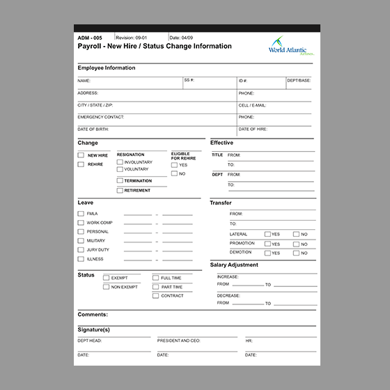
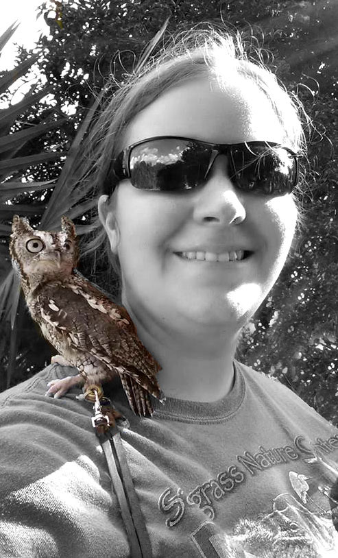
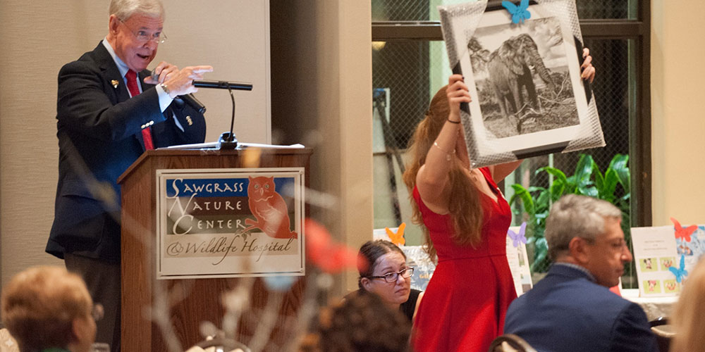
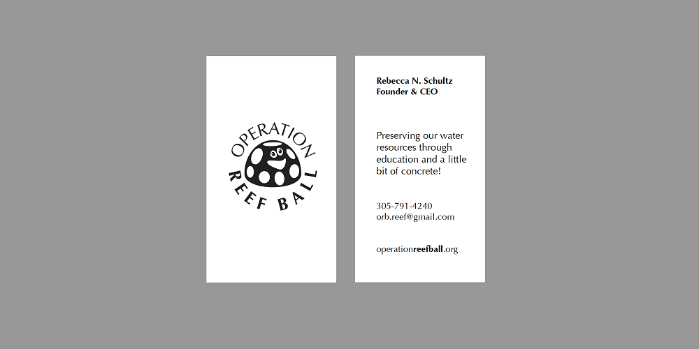

Project Manager
Data Analyst
Training Specialist
Technical Writer
ABOUT
Hello!
Whether under the sea, on land, or in the air, I’m motivated by a deep desire to work hard to find intelligent solutions and produce measurable results. Here are a few examples of where my skills have been useful.
When I began ocean diving, I noticed that some of the coral reefs were deteriorating. I decided to initiate a coral care project, and managed the deployment of 45 habitats to revive decaying coral reefs. I also built awareness programs to educate the community.
On terra firma, I managed a service learning program, coordinating collaborations between non-profits directors and university professors. I drove fund-raising and assisted with administration.
At World Atlantic Airlines, I managed two projects: technical publications and safety data analysis. I also persuaded management to migrate from paper-based reporting forms to an online mobile system.
Presently, I am seeking a challenging opportunity to fully utilize and apply my problem-solving skills, education, experience, and training.
Project Manager, Technical Writer, Data Analyst, & Training Specialist
Resume

Certifications
Business Specialist
Business Operations
Accounting Technology
Specialist
Broward College
Davie, FL
May 2018
Project Management
Executive Certificate
Florida Atlantic University
Boca Raton, FL
April 2018
Geographic Information
Systems
Broward College
Davie, FL
May 2016
Environmental Studies
Florida International University
Miami, FL
August 2011
Underwater Forensics
Chaminade University
Honolulu, HI
July 2009
Affiliations
PMI, Project Management Institute
02/2018 - Present
pmi.org
Women in Aviation, International
10/2017 - Present
wai.org
Sigma Alpha Iota International
Music Fraternity
01/2011 - Present
sai-national.org
Sigma Sigma Sigma National
Sorority
10/2007 - Present
trisigma.org
Girl Scouts of the USA
06/2007 - Present
girlscouts.org
Volunteer
Kitten socialization and foster care
The Cat Network
10/2013 - Present
Awards
2017
Safety Management Systems certification award
2014
Service Learning Organization Appreciation Award from Broward College
2013
Service Learning Organization Appreciation Award from Broward College
2012
Service Learning Organization Appreciation Award from Broward College
2011
Presidents Volunteer Service Award
2010
kynamatrix Research Network Grant
Sea Scout Ship 814 Operation Reef Ball Project Phase 2
William T Hornaday Silver Environmental Award - BSA National Award for exceptional achievement in environmental projects and contributions to conservation.
Sea Scout Quartermaster Award
National Catholic Committee on Scouting Pope Pius Award
BSA Venturing Silver Award
2009
PADI Rescue Diver certification
BSA Venturing Gold Award
Shackleton Award - Awarded for presentation of great leadership in Sea Scouts
2008
Sea World/Busch Gardens Environmental Excellence Award $10,000
Association of Fundraising Professionals: Outstanding Youth in Philanthropy
Archdiocese of Miami Archbishop McCarthy Award
Archdiocese of Miami Saint Timothy Award
BSA Venturing Bronze Award
Presidents Volunteer Service Award
2007
National Girl Scout Young Women of Distinction Award
Girl Scout Gold Award
Cummings Environmental Award and Scholarship
Senior Showcase
Presidents Volunteer Service Award
PORTFOLIO


01
Airline Tech
For years, a system existed, paper documents are filed in a certain way, with signatures required in a specific order. Forms were torn apart, leaving missing pages and barely legible notes on the change request.
When one director had signed off, another director was next in line to review and sign the same document. Time passing between these events was not easily controlled, leading to many uncertainties in a paper-based system. Was the form sent forward for the next signature? Was it still intact? Was it still cohesive? Did they follow up with the last-needed signature and then remember to send it back to the safety department? Did it get lost on someone's desk? How long does one wait until making inquiries? Deadlines were being missed. Documents were being lost. This had to change.
Now we live in a paperless society. Documents are passed in milliseconds from one team member to another. With handheld devices, the days of delay are over. Tracking and advancing necessary forms with the correct signatures, sent automatically to the next person in line, is possible with the creation of an online responsive system.
None of the documents were proprietary or in a category which required a non-disclosure form to exit the building. These forms were public, and were needed for safety regulations approvals. If a plane was to land at a new airport, it had to be within regulation weight and size limits for the runway. If the aircraft was too big, it would not be able to stop in time, putting individuals, buildings, the plane, its cargo, and the environment in harm’s way. If, on the other hand, it was a perfect fit, the jet would be welcome to land when scheduled, joining the family of invited guests.
The forms contain over 200 questions. Calculations for identifying and tallying the answers to these questions became a laborious task. "No go" meant there was something wrong. This delayed approvals, and contracts were lost. However, safety is key, and a new paradigm is needed.
The following four projects showcase my project management, technical writing skills, data analysis, and instinctive decisions to assist in the change to a long-standing paradigm.
P1.1
Technical Writing System Standard
Project Manager & Technical Writer
The technical writing department was set up as individual users with single use copies of the publishing software with no version control management. The inconsistent system versions made it difficult if not impossible to share documents between technical writers. This represented a significant risk as these documents could only be accessed and maintained by the individual who had the correct version on their computer. In addition, it would take IT longer to identify any issues as they had to look at a specific environment rather than a standardized one.
A 30 day project plan was developed to implement the standardized publishing system across the technical writing department. Budget and cost management plan was established. Contracts for the software had to be initiated and executed. Effective management of IT resources was necessary to implement new software systems and address individual system constraints. Following implementation, stakeholders were trained on a consistent system and upgrading their documents to the new system format. System maintenance was transferred to IT and utilization was maintained by the technical writing department.
P1.2
Form Standardization
Project Manager, Technical Writer, Data Analyst, & Training Specialist
The airline utilized an ad hoc approach to risk management and safety reporting with each department developing their own documentation format. FAA regulation required standardization of the risk management and safety incident forms. The standardized documents would facilitate risk analysis and mitigation as well as safety incident response. The project timeline was 2 months. The scope of the project was identified and the stakeholders were surveyed to determine the specific departmental requirements as well as the development of a system to manage the incident response process. Following the technical writing process, the documents were regularly reviewed by departmental SMEs. These forms were reviewed and edited, where I maintained version control, upon approval executive leadership. Stakeholders were trained in the access and use of the new documents. Ownership was then transferred to the safety department manager.

P1.3
Safety Management System Manual
Project Manager, Technical Writer, & Training Specialist
The project objective was the compilation of FAA regulated Safety Management System (SMS) manual. The project had a critical six-month deadline as defined by the FAA requirements. During the development process, I was responsible for coordinating internal staff and external stakeholders compiling and editing the manual and as well as managing the administration of formal document review and verification. Implementation of the time management plan effectively coordinated the SME schedule supporting the multi-phase internal / external audit process. The project culminated with final presentation of the manual to the FAA for audit and approval. The FAA approved manual was then transferred to the airline Safety Director to maintain.
P1.4
Mobile Migration
Project Manager & Data Analyst
Reports and forms utilized by the in-flight staff would often be received by the dispatch office missing pages or information. Incident data would be filled out after a significant delay leading to mistakes and missing components. The Safety Director wanted a method developed to provide the in-flight staff a direct and immediate way to complete an incident report. A requirement was to utilize the iPads each in-flight crewmember already possessed to digitally record and report the incident specifics.
This four-month project plan includes meeting with and obtaining information from stakeholders to determine information and data requirements, design expectations, risk mitigation, and training needs assessment and delivery to the stakeholders. Following implementation, the effectiveness was monitored by analyzing errors on the received incident reports. Ownership was transferred to the safety department manager following successful development and implementation of the project.
02
Wildlife Care
Funds are necessary to feed critters. The wildlife organization feeds 7000 variations of hungry and injured, winged, crawling, slithering, and scaly. The sheer volume of water needed to house a restoration and bathing tank could fill a swimming pool in a few hours.
A baby squirrel in the aftermath of a horrific car crash, narrowly escaping the crushing wheels, however, unable to land upright, is now in need of stitches and restrained mobility. Cereal, old newspapers, towels, and mealworms, are necessary to sustain a comfortable warm, dry, and safe space.
Meanwhile, a family of baby birds nestled secure and warm, awaiting the dinner hour, hear strange noises as chain saws begin their descent from the top of their tree. One-by-one the limbs of the tree fall with a loud thud. And in an instant, their home is gone. Unaware of the situation, their mom returns to a vast and empty space, a location to be repurposed for economic gain. Wings broken, nowhere to turn, a good Samaritan rescues the nestlings and a glint of hope remains.
The wildlife rescue habitat is a safe space and an emergency room always prepared for lifesaving action. And even with a healed wing, many will serve as educational ambassadors, sharing the beauty of an expansive feather array, the details of raptor talons, and sounds usually only heard from a distance.
Presenting a unique view for children and adults, these animals have a new purpose: to educate and provide a reason to smile.
Under our roof, we do not discriminate. Predators in the wild share solace, a calm space to recover from natural disaster, displaced from forest fires, hurricanes, or tornadoes. We craft accommodations to isolate temperamental, so they will not harm each other during their stay. All this requires funding.
Task: I was asked to raise $15,000. I approached this problem using three methods. The first method was a gala, "an evening to remember" dressed in black tie, sharing a toast to all the efforts of the volunteers, presenting visions of the future renovation plans, unveiling past milestones accomplished yearlong, showcasing the animals on a runway, as they passed the basket.
The second method involved orchestrating a mammoth garage sale. Items could be donated, and then sold. All profits would benefit the animals and the care they desperately need. Sponsors could be involved, requesting donations in the form of snacks for the animals, and volunteers, as well as resources for the office and cages.
The third method I proposed was to create an online presence to raise awareness and provide a channel for online donations.

P2.1
Gala Fundraiser
Project Manager & Training Specialist
The SNC annual gala is the primary fundraiser supporting nature center activities. This event provides an average of $30,000 toward center necessities. The gala is an opportunity for the community to provide direct support for the injured native wildlife.
Each year provides a unique opportunity to address current needs of the hospital and center in support of their mission. The project begins with an assessment of needs and an estimation of the costs associated with those needs. This serves as a foundation for the project planning helping to set goals for fundraising and community engagement.
This six month project plan includes such activities as the logistics of the event, coordinating resources including staff and volunteers’ management, cost containment including procurement management and contract maintenance, communication with the board of directors, volunteers, and invitees, risk assessment and mitigation, and night of the event activities.
Following the fruitful event, final costs are managed and final reports with lessons learned are compiled and delivered to the executive board. The project included a Gala project guide to be used by the center for similar future events.

P2.2
Community Garage Sale
Project Manager & Technical Writer
The annual indoor garage sale is a secondary fundraiser event that tends to net $5,000 by the end of the event. These funds are utilized directly towards the hospital expenses.
This four month project plan includes finding and securing a location, risk assessment and mitigation, coordinating resources including staff and volunteer management, communicating with members to solicit donations, and logistics of moving products to the sale site and organized by a set floor plan. The weekend event would be advertised in local schools and on the city’s television station.
Following the successful event, the location was returned to its original condition and final reports and lessons learned were compiled and delivered to executive leadership and the board. The project included an Indoor Garage Sale project guide to be used by the center for similar future events.
P2.3
Online Fundraising
Project Manager, Data Analyst, & Training Specialist
One current consistent donation method is a link on the website to PayPal where individuals can go to donate any monetary amount they desire. This method however can only be done when the link is advertised to the general public. In addition to the current single donation method, the center wished to encourage sustained contributions.
This one month project plan including finding and securing an alternative way for people to donate to the center via an online venue, risk assessment of programs, managing effects on the budget, communicating with online presence, and logistics of website design.
Following implementation, stakeholders were trained on the two donation programs. System maintenance was transferred to the Operations Director.
03
Coral Revival
Imagine life without coral. All the fish in the sea would need scuba gear to breathe. Coral is not just colorful under water plants. Corals are animals bringing shelter and more to the environment. And they are dying. What once was a vast array of vibrant hues, breath taking and voluminous gardens of the sea, are now seemingly burned from the sunlight, bleached, stripped of life. The question I had was why. And better yet, what can be done to fix it, restoring the patterns void below the ocean’s surface.
Extensive, exhaustive research became my focus, pinpointing the cause. Numerous artificial reefs methods have been deployed but many have unexpected impacts and can actually damage the environment they are expected to support! Joining forces with a non-profit specializing in coral reef restoration, I learned about reef balls, a designed artificial reef component composed of a cement half dome with holes for fish to enter and exit. Reef Balls allow a stable habitat for corals to cling to and grow. Small fish had somewhere to escape when large fish are hungry. Reef balls do not add to the pollution, they do not emit oil and toxins like a sunken ship or the remains of a waste dump.
Taking further action, I decided to hold workshops, creating awareness of young and old. Interactive workbooks, developed to utilize edu-tainment training models, introduce ocean and waterway awareness, provide deep dive virtual excursions to the bottom of the sea, and develop the understanding the anatomy of coral: how it is a living, breathing, animal, not a plant. The workbook, presents facts and the science in the design of artificial reefs and reef balls, their purpose, their construction, and their secret compartmental resting places.
How heavy is your car? A single reef ball needs a crane to lift the ball above the sand on to a vessel. A standard deployment can accommodate up to 10 reef balls. The project has successfully deployed over 45 reef balls to date. Raising funds from numerous community sponsors including Target and Sea World as well as in-kind donations supporting the project.
As I continue to dive the reef sites, photographing the newly placed reef ball homes, the envisioned, created, transported, deployed, and now monitored artificial reef, I am proud of the accomplishment, but more importantly, the coral now has a chance for revitalization.
In a continuation of the education and awareness component of this endeavor, I followed up by developing a narrated story book, to enliven the audience understanding of the components or characters in the story. Animating the various participants giving them a voice, making them tell their story from their perspective, a hero, a villain, a plot, an escape, and a happy ending. All written to bring awareness to a definitive problem.
The coral is dying. We can fix this with a few changes in daily habits and focused restoration efforts. This collection of projects is my contribution.
P3.1
Deployment
Project Manager, Data Analyst, & Training Specialist
Ocean waterways and coral reefs are an integral part of life in South Florida. To combat the coral reef degradation, the project creates and deploys artificial reef components designed for the specifics of the South Florida environment. The reef ball imitates the appearance and function of natural coral reefs and provides a stable environment for corals and other marine life.
As a result, the area will experience an increase in fish population and healthier waterways. Stakeholder (including regulatory agency) needs assessments were conducted and results were incorporated in the project plan. Project budget requirements led to grant application and donation solicitation efforts. Communications planning supported community awareness and stakeholder reporting requirements.
Ultimately over 30 reef balls were created and deployed in the initial deployment. Technical documentation, training agendas and curriculum, deployment reports and coral growth data collection and analysis tools were provided to various agencies for ongoing monitoring and maintenance.
P3.2
Education
Project Manager, Technical Writer, & Training Specialist
The project is the development and presentation of community coral reef education opportunities. Community participants study the current state of the ocean and reef environment, the effects of human interaction with the environment, and what can be done to restore and revitalize the natural habitats. They learn how humans can stop the damage and help restore the natural habitat.
Project objectives included the identification and coordination of community agencies and organizations to support the goal of improving the environment through education, organizing the location logistics of the opportunity, managing the communication efforts, and ensuring the materials required are available for the presentations. Event outcome reports were developed and delivered to grant managers and other stakeholders. Community agencies received event documentation and lessons learned to support future presentations and events.

P3.3
Social Entrepreneurship
Project Manager, Technical Writer, Data Analyst, & Training Specialist
As my commitment to coral reef preservation and restoration grew, the need for a coordination and formalization of efforts became apparent. Creative ideas and project opportunities were abundant. Sponsors and other stakeholders needed a name, an entity, they could reference in their outreach efforts.
The project to establish a company was a natural extension of the programs, projects, and resources already developed and presented. Operation Reef Ball continues my original mission to provide low or no-cost resources for community awareness and coral reef restoration efforts.
The project plan included: develop the corporate identity; (logo, communication templates, t-shirt design for event participants) initialize a presentation and resource repository; establish a coordinated social media presence; and create a primary program persona / character for communications. The six-month project engaged stakeholders to define needs, required the management of human and other resources, and involved significant planning to ensure all aspects of the project were successfully addressed, on time, and within budget.
As a result, Operation Reef Ball is preserving our water resources through education and a little bit of concrete!

CONTACT
LinkedIn Profile
linkedin.com/in/rebeccanschultz
Phone
305.791.4240
Email
RebeccaNSchultz at gmail dot com